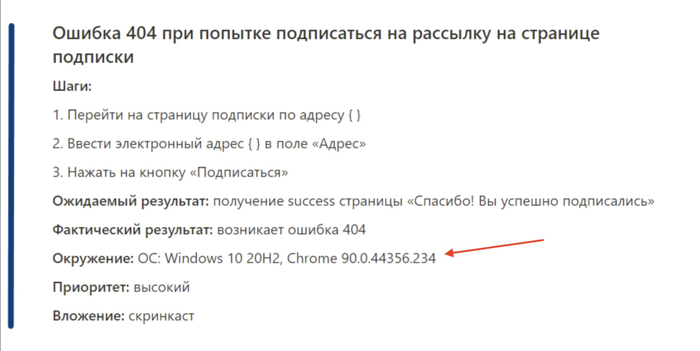

В IT термин «окружение» носит два смысла. Пробеги глазами, не углубляйся — тема окружений детально разбирается в модуле «Процессы».
Пока достаточно понять что у термина «Окружение» два применения, и что разработчики/тестировщики работают не на реальном сайте, а на его «копиях» — стендах.
Идентификационная информация о платформе, с которой осуществляется доступ к системе: ОС, браузер, версия, устройство.
Эта информация часто упоминается в баг-репортах — один и тот же баг может воспроизводиться на MacOS в Safari и не воспроизводиться на Windows в Chrome.

Пример как указывается окружение в баг-репорте: ОС + браузер + версия
Отдельная приватная версия системы для разработки, тестирования и отладки.
https://test4.mypet.io/ — test стенд №4 через домен 3-го уровня
https://petshop.net/?env=dev15 — dev стенд №15 через query params
https://mypet.io/ — прод
В видео говорится что сборки выливаются на прод для тестирования. Это крайне неверный подход — на нормальных проектах непротестированные сборки на прод не выкладывают. Такое может быть только у стартапов.